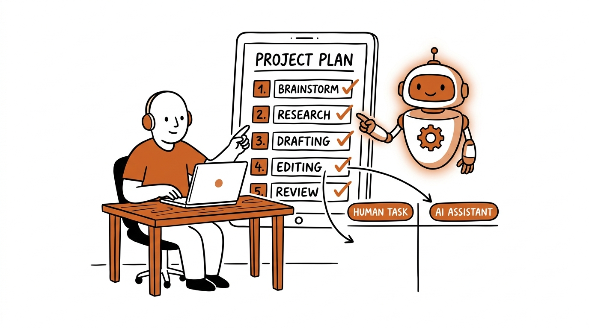

메타프롬프팅으로 나만의 스킬 만들기
장피엠 가이드 + 개인 취향 · 사용자 품질 평가 전
확인 필요인 퇴고본은 게시용 완성본이 아닙니다.
작성자 확인 항목 5개
- 부정 표현의 동등성에 대한 자동 F3 지적이 남음
- R016: 의미 변경 — 원문 32~50행: 주간보고를 자동화한다고 해볼게요. 혼자 머릿속으로 쪼개면 보통 이렇게 끝납니다. "자료 모으고 → 보고서 쓰고 → 제출." 딱 3덩어리죠. 그런데 이 덩어리 안에서는 'AI에게 맡길 지점'이 안 보입니다. 너무 뭉뚱그려져 있거든요. 그래서 혼자 쪼개지 마세요. AI와 함께 쪼개세요. 이렇게 말을 걸면 됩니다. ``` 이 주간보고 업무를 더 이상 못 쪼갤 때까지 아주 작은 행동 단위로, 순서대로 번호 매겨서 목록으로 만들어줘. ``` 그러면 3덩어리였던 일이 무려 39단계로 펼쳐집니다. "캘린더를 열어 이번 주 일정을 훑는다 → 보고할 만한 회의를 메모한다 → 메일함을 연다..." 손이 가는 행동 하나하나까지요. 이렇게까지 잘게 나눠야 비로소 보이기 시작합니다. 이건 AI한테 맡겨도 되겠다, 이건 내가 꼭 해야겠다. 여기서 끝이 아닙니다. AI가 쪼갠 39단계에는 나와 상관없는 게 섞여 있어요. 안 쓰는 도구, 해당 없는 단계 같은 것들요. 그대로 받아 쓰면 안 됩니다. 한 번 더 대화하세요. ``` 나는 슬랙은 안 쓰고, 노션 대신 엑셀을 써. 보고서에 매출 숫자는 안 들어가. 이 기준으로 다시 정리해줘. ``` 그러면 39단계가 34단계로 다듬어집니다. 숫자가 중요한 게 아니에요. 핵심은 이게 **'나만의 업무 설계도'**가 된다는 겁니다. 요리를 자동화하려면 먼저 레시피를 단계별로 적어야 어디서 기계를 쓸지 보이잖아요. 그것과 똑같습니다. 결과 39~39행: 그러면 39단계가 34단계로 줄어들며, 실제로 제가 수행하는 업무의 순서와 행동만 남습니다. 단계의 숫자보다 중요한 것은 제 업무 방식에 맞춘 '나만의 업무 설계도'를 얻는다는 점입니다. 판단: 원문은 주간보고를 자동화한다고 가정한 예시에서 39단계를 34단계로 다듬어 나만의 설계도를 만든다고 한다. 결과는 실제 저자가 수행하는 순서와 행동만 남는다는 완전 일치 주장을 추가했다. 원문에 실제 수행 및 불필요한 행동 전부 제거를 입증할 내용이 없다.
- R032: 의미 변경 — 원문 32~50행: 주간보고를 자동화한다고 해볼게요. 혼자 머릿속으로 쪼개면 보통 이렇게 끝납니다. "자료 모으고 → 보고서 쓰고 → 제출." 딱 3덩어리죠. 그런데 이 덩어리 안에서는 'AI에게 맡길 지점'이 안 보입니다. 너무 뭉뚱그려져 있거든요. 그래서 혼자 쪼개지 마세요. AI와 함께 쪼개세요. 이렇게 말을 걸면 됩니다. ``` 이 주간보고 업무를 더 이상 못 쪼갤 때까지 아주 작은 행동 단위로, 순서대로 번호 매겨서 목록으로 만들어줘. ``` 그러면 3덩어리였던 일이 무려 39단계로 펼쳐집니다. "캘린더를 열어 이번 주 일정을 훑는다 → 보고할 만한 회의를 메모한다 → 메일함을 연다..." 손이 가는 행동 하나하나까지요. 이렇게까지 잘게 나눠야 비로소 보이기 시작합니다. 이건 AI한테 맡겨도 되겠다, 이건 내가 꼭 해야겠다. 여기서 끝이 아닙니다. AI가 쪼갠 39단계에는 나와 상관없는 게 섞여 있어요. 안 쓰는 도구, 해당 없는 단계 같은 것들요. 그대로 받아 쓰면 안 됩니다. 한 번 더 대화하세요. ``` 나는 슬랙은 안 쓰고, 노션 대신 엑셀을 써. 보고서에 매출 숫자는 안 들어가. 이 기준으로 다시 정리해줘. ``` 그러면 39단계가 34단계로 다듬어집니다. 숫자가 중요한 게 아니에요. 핵심은 이게 **'나만의 업무 설계도'**가 된다는 겁니다. 요리를 자동화하려면 먼저 레시피를 단계별로 적어야 어디서 기계를 쓸지 보이잖아요. 그것과 똑같습니다. 결과 39~39행: 그러면 39단계가 34단계로 줄어들며, 실제로 제가 수행하는 업무의 순서와 행동만 남습니다. 단계의 숫자보다 중요한 것은 제 업무 방식에 맞춘 '나만의 업무 설계도'를 얻는다는 점입니다. 판단: 39→34 수치는 같지만 실제로 제가 수행하는 업무의 순서와 행동만 남는다는 새 보장을 덧붙였다. 원문은 가정 예시와 개인화 설명이며 실제 업무와 완전히 일치했다는 진술은 없다.
- R038: 의미 변경 — 원문 94~101행: 거창한 프롬프트 엔지니어링이 아니에요. 동료에게 일을 설명하듯 대화하면 됩니다. 작은 스킬 하나가 매주 당신의 시간을 돌려줍니다. > **오늘 바로 할 수 있는 4단계 액션** > > 1. **고르기** — 매주 반복하는 업무 1개를 고른다 (주간보고, 회의록 정리 등) > 2. **쪼개기** — 클로드에게 "이 업무를 더 못 쪼갤 때까지 행동 단위로 나눠줘"라고 말 건다 > 3. **개인화** — "내가 안 쓰는 도구는 빼고 내 방식으로 다시 정리해줘"로 나만의 설계도 만들기 > 4. **구분하기** — "각 단계를 직접/확인만/완전위임으로 분류해줘"로 내 판단 지점 찾기 결과 73~73행: 거창한 프롬프트 엔지니어링 없이도 동료에게 일을 설명하듯 AI와 대화할 수 있습니다. 매주 반복하는 업무를 하나 골라 행동 단위로 나누고, 제 업무 방식에 맞춰 각 단계를 누구에게 맡길지 정하면 됩니다. 판단: 원문은 독자에게 반복 업무를 고르고 내 방식으로 개인화하라고 한다. 결과는 독자에게 권하는 문맥에서 제 업무 방식에 맞추라고 하여 개인화 대상을 저자의 방식으로 바꾸었다. 각자의/자신의 업무 방식이어야 원문의 지시 대상이 유지된다.
- AUTHOR: 의미 변경 — 원문 32행 「주간보고를 자동화한다고 해볼게요」, 50행 「39단계가 34단계로 다듬어집니다」와 결과 39행 「실제로 제가 수행하는 업무의 순서와 행동만 남습니다」를 대조했다. 가정 예시를 저자의 실제 업무와 완전히 일치하는 경험으로 강화했다. 다만 원문 63행 「내가 진짜 머리 써야 할 일은 단 3개뿐이었어요」가 있으므로 결과 50행 「제가 직접 판단해야 할 일은 아래의 3개였고」 자체는 경험을 새로 추가했다고 판단하지 않는다.
원문 Markdown · 퇴고 Markdown · 검수 요약
원문
AI에게 "시키지" 말고 "함께 설계"하세요 — 메타 프롬프팅으로 나만의 클로드 스킬 만들기

"AI 좋은 건 알겠는데, 막상 내 일에 어디다 써야 할지 모르겠어요."
혹시 당신도 이 지점에서 딱 막히지 않으셨나요? 유튜브에서 본 멋진 프롬프트를 복사해 붙여넣어 봐도, 내 업무에는 영 안 맞습니다. 그래서 결론을 내립니다. "내가 프롬프트를 못 써서 그런가 보다."
솔직히 말씀드릴게요. 문제는 프롬프트 실력이 아닙니다. 순서가 거꾸로 된 거예요.
대부분의 사람은 "AI한테 뭘 시키지?"부터 고민합니다. 그런데 이건 두 번째로 해야 할 일을 첫 번째로 당겨버린 겁니다. 그래서 막힙니다. 진짜 필요한 건 '잘 시키는 법'이 아니라 'AI와 함께 설계하는 법'입니다. 저는 이걸 메타 프롬프팅이라고 부릅니다.
어렵게 들리시나요? 쉽게 말하면 이렇습니다. AI를 '답 주는 도구'가 아니라 '함께 일을 설계하는 동료'로 쓰는 것. 동료에게 일을 설명하듯 대화하면 됩니다. 그 대화에는 정해진 순서가 있어요. 쪼개기 → 구분하기 → 처리하기.
이 글은 그린코끼리 AI의 「클로드 AI 업무 자동화 3단계」 영상을 '메타 프롬프팅' 렌즈로 다시 풀어낸 것입니다. 같이 한 단계씩 가볼게요.
1단계 쪼개기 — 메타 프롬프팅으로 AI와 함께 업무 쪼개기
자동화의 80%는 사실 여기서 결정됩니다.
주간보고를 자동화한다고 해볼게요. 혼자 머릿속으로 쪼개면 보통 이렇게 끝납니다. "자료 모으고 → 보고서 쓰고 → 제출." 딱 3덩어리죠. 그런데 이 덩어리 안에서는 'AI에게 맡길 지점'이 안 보입니다. 너무 뭉뚱그려져 있거든요.
그래서 혼자 쪼개지 마세요. AI와 함께 쪼개세요. 이렇게 말을 걸면 됩니다.
이 주간보고 업무를 더 이상 못 쪼갤 때까지
아주 작은 행동 단위로, 순서대로 번호 매겨서 목록으로 만들어줘.
그러면 3덩어리였던 일이 무려 39단계로 펼쳐집니다. "캘린더를 열어 이번 주 일정을 훑는다 → 보고할 만한 회의를 메모한다 → 메일함을 연다..." 손이 가는 행동 하나하나까지요. 이렇게까지 잘게 나눠야 비로소 보이기 시작합니다. 이건 AI한테 맡겨도 되겠다, 이건 내가 꼭 해야겠다.
여기서 끝이 아닙니다. AI가 쪼갠 39단계에는 나와 상관없는 게 섞여 있어요. 안 쓰는 도구, 해당 없는 단계 같은 것들요. 그대로 받아 쓰면 안 됩니다. 한 번 더 대화하세요.
나는 슬랙은 안 쓰고, 노션 대신 엑셀을 써.
보고서에 매출 숫자는 안 들어가. 이 기준으로 다시 정리해줘.
그러면 39단계가 34단계로 다듬어집니다. 숫자가 중요한 게 아니에요. 핵심은 이게 '나만의 업무 설계도'가 된다는 겁니다. 요리를 자동화하려면 먼저 레시피를 단계별로 적어야 어디서 기계를 쓸지 보이잖아요. 그것과 똑같습니다.
2단계 구분하기 — AI 업무 자동화의 기준은 '판단과 책임'
이제 34단계를 사람 몫과 AI 몫으로 나눕니다. 기준은 딱 하나예요. '판단과 책임'.
고르고, 정하고, 책임지는 일. 이게 사람의 몫입니다. 나머지 수집하고, 정리하고, 초안 쓰는 일은 전부 AI에게 넘겨도 됩니다. 이것도 AI와 함께 나누면 됩니다.
이 34단계를 세 가지로 분류해줘.
① 내가 직접 / ② AI가 하고 나는 확인만 / ③ AI에 완전 위임
결과가 놀랍습니다. 34단계 중에 내가 진짜 머리 써야 할 일은 단 3개뿐이었어요.
- 보고서에 무엇을 넣을지 고르기
- 다음 주 계획 정하기
- 최종 전송 버튼 누르기
나머지 31개는 전부 AI가 합니다. 여기서 한 가지 팁을 더 드릴게요. 판단은 스킬 '안'에 박지 마세요. 스킬은 수집·정리·초안 같은 순수 실행만 담당하게 하고, '내가 고르고 정하는' 판단은 흐름의 길목에 따로 두는 겁니다. 그래야 스킬이 깨끗한 부품으로 남아서 다른 업무에도 재사용할 수 있어요.
3단계 처리하기 — 대화를 '나만의 클로드 스킬'로 굳히기
설계가 끝났으면 이 흐름을 자산으로 만들 차례입니다.
이 워크플로우를 반복 실행할 수 있는 스킬로 만들어줘.
이름은 '주간보고 만들기'로 해줘.
여기에 커넥터(구글 캘린더, Gmail, 드라이브, 노션 등)를 연결하면 데이터 수집까지 자동으로 됩니다. 스킬을 실행하면 클로드가 알아서 일정·메일·기록을 모아 보고 초안을 만들어줍니다. 당신은 아까 그 판단 3개만 더하면 끝이에요.
다만 한 가지는 꼭 기억하세요. 스킬은 한 번 만들고 끝이 아닙니다. 처음부터 완벽하게 나오는 경우는 거의 없어요. 만들고 → 돌려보고 → 고치고. 원하는 결과가 나올 때까지 이 과정을 반복해야 합니다. 이 수정 과정도 결국 AI와의 대화예요. 초기에 시간을 한 번 제대로 투자하면, 그다음부터는 매주 판단 몇 개만 하면 됩니다.
결과물은 범용 도구가 아닙니다. 오직 나만을 위한 전용 비서 하나가 생기는 거예요.
마치며
오늘 핵심을 세 줄로 정리할게요.
- AI에게 "뭘 시킬까"부터 찾지 마세요. 업무를 AI와 함께 쪼개는 게 먼저입니다.
- 사람은 판단만, 나머지는 전부 AI에게.
- 대화로 설계한 흐름을 스킬로 굳히면, 나만의 비서가 됩니다.
거창한 프롬프트 엔지니어링이 아니에요. 동료에게 일을 설명하듯 대화하면 됩니다. 작은 스킬 하나가 매주 당신의 시간을 돌려줍니다.
오늘 바로 할 수 있는 4단계 액션
- 고르기 — 매주 반복하는 업무 1개를 고른다 (주간보고, 회의록 정리 등)
- 쪼개기 — 클로드에게 "이 업무를 더 못 쪼갤 때까지 행동 단위로 나눠줘"라고 말 건다
- 개인화 — "내가 안 쓰는 도구는 빼고 내 방식으로 다시 정리해줘"로 나만의 설계도 만들기
- 구분하기 — "각 단계를 직접/확인만/완전위임으로 분류해줘"로 내 판단 지점 찾기
여기까지만 해봐도 "어디다 써야 할지 모르겠다"는 막막함이 "이건 맡기고 이건 내가 한다"는 명확함으로 바뀝니다. 스킬 제작과 커넥터 연결은 그다음 주말에 천천히 하셔도 늦지 않아요.
이 글은 그린코끼리 AI의 「클로드 AI 업무 자동화 3단계」(https://youtu.be/hLNn4mDhR9c) 영상을 바탕으로, 필자가 '메타 프롬프팅' 관점에서 재해석해 작성했습니다.
퇴고본
AI에게 "시키지" 말고 "함께 설계"하세요 — 메타 프롬프팅으로 나만의 클로드 스킬 만들기
"AI 좋은 건 알겠는데, 막상 내 일에 어디다 써야 할지 모르겠어요." 혹시 이 지점에서 막히지 않으셨나요? 유튜브에서 본 프롬프트를 복사해 붙여넣어도 내 업무에는 영 안 맞아서 "내가 프롬프트를 못 써서 그런가 보다."라고 생각할 때가 있습니다. 하지만 문제는 프롬프트 실력이 아닙니다. 업무 자동화를 시작하는 순서가 거꾸로 되어 있습니다. 대부분의 사람은 "AI한테 뭘 시키지?"부터 고민하지만, 무엇을 맡길지 고르는 일은 두 번째에 해야 합니다.
먼저 AI와 함께 업무를 설계해야 하고 저는 이 과정을 메타 프롬프팅이라고 부릅니다. AI를 '답 주는 도구'로만 쓰지 않고 '함께 일을 설계하는 동료'로 쓰면서, 동료에게 일을 설명하듯 대화하는 방식입니다. '잘 시키는 법'보다 'AI와 함께 설계하는 법'이 먼저이며, 대화는 쪼개기 → 구분하기 → 처리하기 순서로 진행합니다.
이 글은 그린코끼리 AI의 「클로드 AI 업무 자동화 3단계」 영상을 '메타 프롬프팅' 관점에서 재해석한 글입니다.
1단계 쪼개기 — 메타 프롬프팅으로 AI와 함께 업무 쪼개기
자동화의 80%는 업무를 작은 행동으로 나누는 단계에서 결정됩니다. 주간보고를 혼자 나누면 보통 "자료 모으고 → 보고서 쓰고 → 제출."이라는 3덩어리로 끝나는데, 이 정도로는 'AI에게 맡길 지점'이 안 보입니다. AI와 함께 업무를 더 잘게 나누려면 다음과 같이 요청하면 됩니다.
이 주간보고 업무를 더 이상 못 쪼갤 때까지
아주 작은 행동 단위로, 순서대로 번호 매겨서 목록으로 만들어줘.
그러면 3덩어리였던 일이 39단계로 나뉘고, "캘린더를 열어 이번 주 일정을 훑는다 → 보고할 만한 회의를 메모한다 → 메일함을 연다..."처럼 실제 행동을 확인할 수 있습니다. 업무를 이 정도로 나눠야 AI에게 맡길 일과 직접 해야 할 일이 보입니다. 여기서 끝이 아닙니다. AI가 나눈 39단계에는 안 쓰는 도구나 제 업무와 상관없는 단계도 섞여 있습니다. AI가 만든 목록을 그대로 받아 쓰면 안 되므로, 제 업무 방식에 맞춰 다시 정리하도록 요청합니다.
나는 슬랙은 안 쓰고, 노션 대신 엑셀을 써.
보고서에 매출 숫자는 안 들어가. 이 기준으로 다시 정리해줘.
그러면 39단계가 34단계로 줄어들며, 실제로 제가 수행하는 업무의 순서와 행동만 남습니다. 단계의 숫자보다 중요한 것은 제 업무 방식에 맞춘 '나만의 업무 설계도'를 얻는다는 점입니다.
2단계 구분하기 — AI 업무 자동화의 기준은 '판단과 책임'
이제 34단계를 사람 몫과 AI 몫으로 나누며, 분류 기준은 '판단과 책임'입니다. 고르고 정하고 책임지는 일은 사람이 맡고, 나머지 수집·정리·초안 작성은 전부 AI에게 넘겨도 됩니다. 각 단계를 나누는 작업 역시 AI와 함께 진행할 수 있습니다.
이 34단계를 세 가지로 분류해줘.
① 내가 직접 / ② AI가 하고 나는 확인만 / ③ AI에 완전 위임
이렇게 나눠 보니 34단계 중 제가 직접 판단해야 할 일은 아래의 3개였고, 나머지 31개는 전부 AI가 수행합니다.
- 보고서에 무엇을 넣을지 고르기
- 다음 주 계획 정하기
- 최종 전송 버튼 누르기
판단을 스킬 '안'에 넣지 않고, 스킬에는 수집·정리·초안 작성 같은 실행만 맡기는 편이 좋습니다. '내가 고르고 정하는' 단계는 스킬을 실행하는 과정에 별도로 두어야 다른 업무에서도 같은 스킬을 재사용할 수 있습니다.
3단계 처리하기 — 대화를 '나만의 클로드 스킬'로 굳히기
업무를 설계했다면 같은 흐름을 반복해서 실행할 수 있도록 AI에게 클로드 스킬로 만들어 달라고 요청합니다.
이 워크플로우를 반복 실행할 수 있는 스킬로 만들어줘.
이름은 '주간보고 만들기'로 해줘.
여기에 커넥터(구글 캘린더, Gmail, 드라이브, 노션 등)를 연결하면 데이터 수집도 자동으로 진행됩니다. 스킬을 실행하면 클로드가 일정·메일·기록을 모아 보고 초안을 만들고, 저는 앞서 정한 3개만 판단하면 됩니다.
스킬은 한 번 만들고 끝나는 것이 아니며, 처음부터 완벽한 결과가 나오는 경우는 거의 없습니다. 원하는 결과가 나올 때까지 만들고 실행하고 고치는 과정을 반복해야 하고, 수정할 때도 AI와 대화하면 됩니다. 초기에 시간을 들여 이 과정을 거치면 그다음부터는 매주 몇 가지 판단만 하면 됩니다. 이렇게 만든 스킬은 범용 도구가 아니라 제 업무만을 처리하는 전용 도구입니다.
직접 적용해 보기
거창한 프롬프트 엔지니어링 없이도 동료에게 일을 설명하듯 AI와 대화할 수 있습니다. 매주 반복하는 업무를 하나 골라 행동 단위로 나누고, 제 업무 방식에 맞춰 각 단계를 누구에게 맡길지 정하면 됩니다.
오늘 바로 할 수 있는 4단계 액션
- 고르기 — 매주 반복하는 업무 1개를 고른다 (주간보고, 회의록 정리 등)
- 쪼개기 — 클로드에게 "이 업무를 더 못 쪼갤 때까지 행동 단위로 나눠줘"라고 말 건다
- 개인화 — "내가 안 쓰는 도구는 빼고 내 방식으로 다시 정리해줘"로 나만의 설계도 만들기
- 구분하기 — "각 단계를 직접/확인만/완전위임으로 분류해줘"로 내 판단 지점 찾기
AI에게 "뭘 시킬까"를 고민하기 전에 업무를 함께 나누면, "어디다 써야 할지 모르겠다"는 막막함이 "이건 맡기고 이건 내가 한다"는 명확함으로 바뀝니다. 대화로 설계한 업무를 스킬로 만들면 매주 반복 업무에 드는 시간을 줄일 수 있습니다.
이 글은 그린코끼리 AI의 「클로드 AI 업무 자동화 3단계」(https://youtu.be/hLNn4mDhR9c) 영상을 바탕으로, 필자가 '메타 프롬프팅' 관점에서 재해석해 작성했습니다. 스킬 제작과 커넥터 연결은 그다음 주말에 천천히 하셔도 늦지 않으니, 우선 반복 업무를 나누고 맡길 일을 정하는 데까지 해보시기 바랍니다.
전체 변경 줄 확인
--- 원문 +++ 퇴고본 @@ -14,84 +14,63 @@  "AI 좋은 건 알겠는데, 막상 내 일에 어디다 써야 할지 모르겠어요." +혹시 이 지점에서 막히지 않으셨나요? 유튜브에서 본 프롬프트를 복사해 붙여넣어도 내 업무에는 영 안 맞아서 "내가 프롬프트를 못 써서 그런가 보다."라고 생각할 때가 있습니다. 하지만 문제는 프롬프트 실력이 아닙니다. 업무 자동화를 시작하는 순서가 거꾸로 되어 있습니다. 대부분의 사람은 "AI한테 뭘 시키지?"부터 고민하지만, 무엇을 맡길지 고르는 일은 두 번째에 해야 합니다. -혹시 당신도 이 지점에서 딱 막히지 않으셨나요? 유튜브에서 본 멋진 프롬프트를 복사해 붙여넣어 봐도, 내 업무에는 영 안 맞습니다. 그래서 결론을 내립니다. "내가 프롬프트를 못 써서 그런가 보다." +먼저 AI와 함께 업무를 설계해야 하고 저는 이 과정을 메타 프롬프팅이라고 부릅니다. AI를 '답 주는 도구'로만 쓰지 않고 '함께 일을 설계하는 동료'로 쓰면서, 동료에게 일을 설명하듯 대화하는 방식입니다. '잘 시키는 법'보다 'AI와 함께 설계하는 법'이 먼저이며, 대화는 쪼개기 → 구분하기 → 처리하기 순서로 진행합니다. -솔직히 말씀드릴게요. 문제는 프롬프트 실력이 아닙니다. **순서가 거꾸로 된 거예요.** - -대부분의 사람은 "AI한테 뭘 시키지?"부터 고민합니다. 그런데 이건 두 번째로 해야 할 일을 첫 번째로 당겨버린 겁니다. 그래서 막힙니다. 진짜 필요한 건 '잘 시키는 법'이 아니라 **'AI와 함께 설계하는 법'**입니다. 저는 이걸 메타 프롬프팅이라고 부릅니다. - -어렵게 들리시나요? 쉽게 말하면 이렇습니다. AI를 '답 주는 도구'가 아니라 '함께 일을 설계하는 동료'로 쓰는 것. 동료에게 일을 설명하듯 대화하면 됩니다. 그 대화에는 정해진 순서가 있어요. 쪼개기 → 구분하기 → 처리하기. - -이 글은 그린코끼리 AI의 「클로드 AI 업무 자동화 3단계」 영상을 '메타 프롬프팅' 렌즈로 다시 풀어낸 것입니다. 같이 한 단계씩 가볼게요. +이 글은 그린코끼리 AI의 「클로드 AI 업무 자동화 3단계」 영상을 '메타 프롬프팅' 관점에서 재해석한 글입니다. ## 1단계 쪼개기 — 메타 프롬프팅으로 AI와 함께 업무 쪼개기 -자동화의 80%는 사실 여기서 결정됩니다. - -주간보고를 자동화한다고 해볼게요. 혼자 머릿속으로 쪼개면 보통 이렇게 끝납니다. "자료 모으고 → 보고서 쓰고 → 제출." 딱 3덩어리죠. 그런데 이 덩어리 안에서는 'AI에게 맡길 지점'이 안 보입니다. 너무 뭉뚱그려져 있거든요. - -그래서 혼자 쪼개지 마세요. AI와 함께 쪼개세요. 이렇게 말을 걸면 됩니다. +자동화의 80%는 업무를 작은 행동으로 나누는 단계에서 결정됩니다. 주간보고를 혼자 나누면 보통 "자료 모으고 → 보고서 쓰고 → 제출."이라는 3덩어리로 끝나는데, 이 정도로는 'AI에게 맡길 지점'이 안 보입니다. AI와 함께 업무를 더 잘게 나누려면 다음과 같이 요청하면 됩니다. ``` 이 주간보고 업무를 더 이상 못 쪼갤 때까지 아주 작은 행동 단위로, 순서대로 번호 매겨서 목록으로 만들어줘. ``` -그러면 3덩어리였던 일이 무려 39단계로 펼쳐집니다. "캘린더를 열어 이번 주 일정을 훑는다 → 보고할 만한 회의를 메모한다 → 메일함을 연다..." 손이 가는 행동 하나하나까지요. 이렇게까지 잘게 나눠야 비로소 보이기 시작합니다. 이건 AI한테 맡겨도 되겠다, 이건 내가 꼭 해야겠다. - -여기서 끝이 아닙니다. AI가 쪼갠 39단계에는 나와 상관없는 게 섞여 있어요. 안 쓰는 도구, 해당 없는 단계 같은 것들요. 그대로 받아 쓰면 안 됩니다. 한 번 더 대화하세요. +그러면 3덩어리였던 일이 39단계로 나뉘고, "캘린더를 열어 이번 주 일정을 훑는다 → 보고할 만한 회의를 메모한다 → 메일함을 연다..."처럼 실제 행동을 확인할 수 있습니다. 업무를 이 정도로 나눠야 AI에게 맡길 일과 직접 해야 할 일이 보입니다. 여기서 끝이 아닙니다. AI가 나눈 39단계에는 안 쓰는 도구나 제 업무와 상관없는 단계도 섞여 있습니다. AI가 만든 목록을 그대로 받아 쓰면 안 되므로, 제 업무 방식에 맞춰 다시 정리하도록 요청합니다. ``` 나는 슬랙은 안 쓰고, 노션 대신 엑셀을 써. 보고서에 매출 숫자는 안 들어가. 이 기준으로 다시 정리해줘. ``` -그러면 39단계가 34단계로 다듬어집니다. 숫자가 중요한 게 아니에요. 핵심은 이게 **'나만의 업무 설계도'**가 된다는 겁니다. 요리를 자동화하려면 먼저 레시피를 단계별로 적어야 어디서 기계를 쓸지 보이잖아요. 그것과 똑같습니다. +그러면 39단계가 34단계로 줄어들며, 실제로 제가 수행하는 업무의 순서와 행동만 남습니다. 단계의 숫자보다 중요한 것은 제 업무 방식에 맞춘 '나만의 업무 설계도'를 얻는다는 점입니다. ## 2단계 구분하기 — AI 업무 자동화의 기준은 '판단과 책임' -이제 34단계를 사람 몫과 AI 몫으로 나눕니다. 기준은 딱 하나예요. **'판단과 책임'.** - -고르고, 정하고, 책임지는 일. 이게 사람의 몫입니다. 나머지 수집하고, 정리하고, 초안 쓰는 일은 전부 AI에게 넘겨도 됩니다. 이것도 AI와 함께 나누면 됩니다. +이제 34단계를 사람 몫과 AI 몫으로 나누며, 분류 기준은 '판단과 책임'입니다. 고르고 정하고 책임지는 일은 사람이 맡고, 나머지 수집·정리·초안 작성은 전부 AI에게 넘겨도 됩니다. 각 단계를 나누는 작업 역시 AI와 함께 진행할 수 있습니다. ``` 이 34단계를 세 가지로 분류해줘. ① 내가 직접 / ② AI가 하고 나는 확인만 / ③ AI에 완전 위임 ``` -결과가 놀랍습니다. 34단계 중에 내가 진짜 머리 써야 할 일은 단 3개뿐이었어요. +이렇게 나눠 보니 34단계 중 제가 직접 판단해야 할 일은 아래의 3개였고, 나머지 31개는 전부 AI가 수행합니다. 1. 보고서에 무엇을 넣을지 고르기 2. 다음 주 계획 정하기 3. 최종 전송 버튼 누르기 -나머지 31개는 전부 AI가 합니다. 여기서 한 가지 팁을 더 드릴게요. 판단은 스킬 '안'에 박지 마세요. 스킬은 수집·정리·초안 같은 순수 실행만 담당하게 하고, '내가 고르고 정하는' 판단은 흐름의 길목에 따로 두는 겁니다. 그래야 스킬이 깨끗한 부품으로 남아서 다른 업무에도 재사용할 수 있어요. +판단을 스킬 '안'에 넣지 않고, 스킬에는 수집·정리·초안 작성 같은 실행만 맡기는 편이 좋습니다. '내가 고르고 정하는' 단계는 스킬을 실행하는 과정에 별도로 두어야 다른 업무에서도 같은 스킬을 재사용할 수 있습니다. ## 3단계 처리하기 — 대화를 '나만의 클로드 스킬'로 굳히기 -설계가 끝났으면 이 흐름을 자산으로 만들 차례입니다. +업무를 설계했다면 같은 흐름을 반복해서 실행할 수 있도록 AI에게 클로드 스킬로 만들어 달라고 요청합니다. ``` 이 워크플로우를 반복 실행할 수 있는 스킬로 만들어줘. 이름은 '주간보고 만들기'로 해줘. ``` -여기에 커넥터(구글 캘린더, Gmail, 드라이브, 노션 등)를 연결하면 데이터 수집까지 자동으로 됩니다. 스킬을 실행하면 클로드가 알아서 일정·메일·기록을 모아 보고 초안을 만들어줍니다. 당신은 아까 그 판단 3개만 더하면 끝이에요. +여기에 커넥터(구글 캘린더, Gmail, 드라이브, 노션 등)를 연결하면 데이터 수집도 자동으로 진행됩니다. 스킬을 실행하면 클로드가 일정·메일·기록을 모아 보고 초안을 만들고, 저는 앞서 정한 3개만 판단하면 됩니다. -**다만 한 가지는 꼭 기억하세요.** 스킬은 한 번 만들고 끝이 아닙니다. 처음부터 완벽하게 나오는 경우는 거의 없어요. 만들고 → 돌려보고 → 고치고. 원하는 결과가 나올 때까지 이 과정을 반복해야 합니다. 이 수정 과정도 결국 AI와의 대화예요. 초기에 시간을 한 번 제대로 투자하면, 그다음부터는 매주 판단 몇 개만 하면 됩니다. +스킬은 한 번 만들고 끝나는 것이 아니며, 처음부터 완벽한 결과가 나오는 경우는 거의 없습니다. 원하는 결과가 나올 때까지 만들고 실행하고 고치는 과정을 반복해야 하고, 수정할 때도 AI와 대화하면 됩니다. 초기에 시간을 들여 이 과정을 거치면 그다음부터는 매주 몇 가지 판단만 하면 됩니다. 이렇게 만든 스킬은 범용 도구가 아니라 제 업무만을 처리하는 전용 도구입니다. -결과물은 범용 도구가 아닙니다. **오직 나만을 위한 전용 비서 하나**가 생기는 거예요. +## 직접 적용해 보기 -## 마치며 - -오늘 핵심을 세 줄로 정리할게요. - -1. AI에게 "뭘 시킬까"부터 찾지 마세요. 업무를 AI와 함께 쪼개는 게 먼저입니다. -2. 사람은 판단만, 나머지는 전부 AI에게. -3. 대화로 설계한 흐름을 스킬로 굳히면, 나만의 비서가 됩니다. - -거창한 프롬프트 엔지니어링이 아니에요. 동료에게 일을 설명하듯 대화하면 됩니다. 작은 스킬 하나가 매주 당신의 시간을 돌려줍니다. +거창한 프롬프트 엔지니어링 없이도 동료에게 일을 설명하듯 AI와 대화할 수 있습니다. 매주 반복하는 업무를 하나 골라 행동 단위로 나누고, 제 업무 방식에 맞춰 각 단계를 누구에게 맡길지 정하면 됩니다. > **오늘 바로 할 수 있는 4단계 액션** > @@ -100,7 +79,8 @@ > 3. **개인화** — "내가 안 쓰는 도구는 빼고 내 방식으로 다시 정리해줘"로 나만의 설계도 만들기 > 4. **구분하기** — "각 단계를 직접/확인만/완전위임으로 분류해줘"로 내 판단 지점 찾기 -여기까지만 해봐도 "어디다 써야 할지 모르겠다"는 막막함이 "이건 맡기고 이건 내가 한다"는 명확함으로 바뀝니다. 스킬 제작과 커넥터 연결은 그다음 주말에 천천히 하셔도 늦지 않아요. +AI에게 "뭘 시킬까"를 고민하기 전에 업무를 함께 나누면, "어디다 써야 할지 모르겠다"는 막막함이 "이건 맡기고 이건 내가 한다"는 명확함으로 바뀝니다. 대화로 설계한 업무를 스킬로 만들면 매주 반복 업무에 드는 시간을 줄일 수 있습니다. --- *이 글은 그린코끼리 AI의 「클로드 AI 업무 자동화 3단계」(https://youtu.be/hLNn4mDhR9c) 영상을 바탕으로, 필자가 '메타 프롬프팅' 관점에서 재해석해 작성했습니다.* +스킬 제작과 커넥터 연결은 그다음 주말에 천천히 하셔도 늦지 않으니, 우선 반복 업무를 나누고 맡길 일을 정하는 데까지 해보시기 바랍니다.